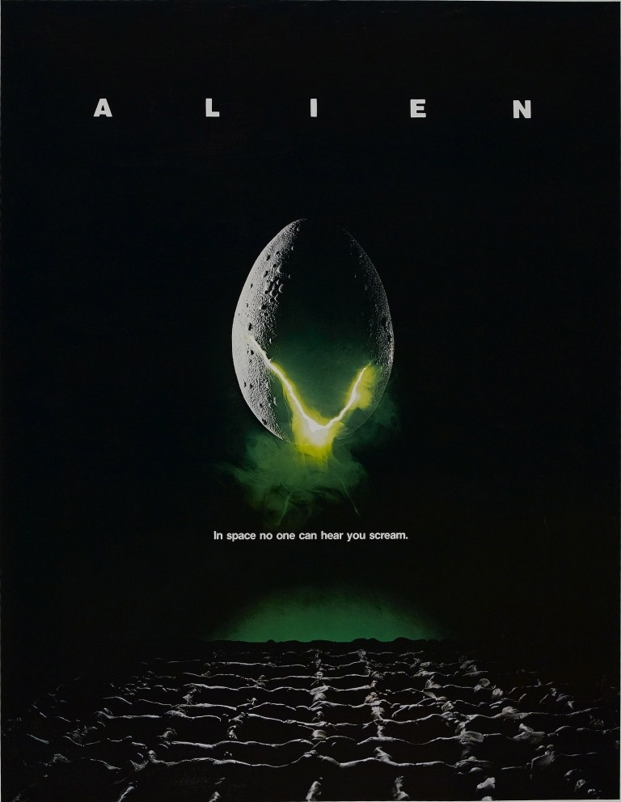
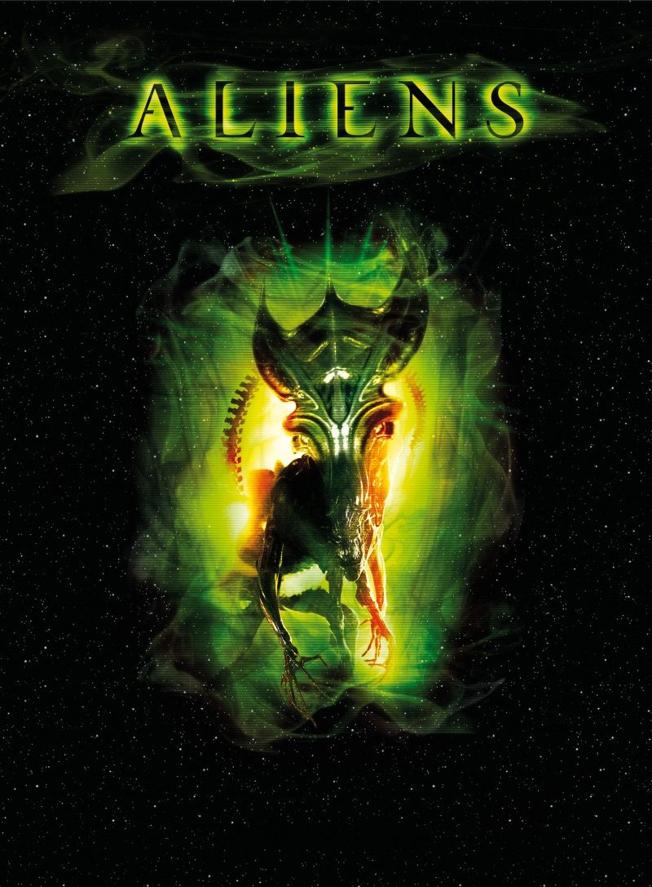
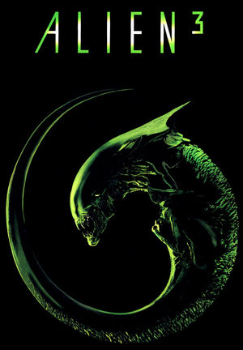
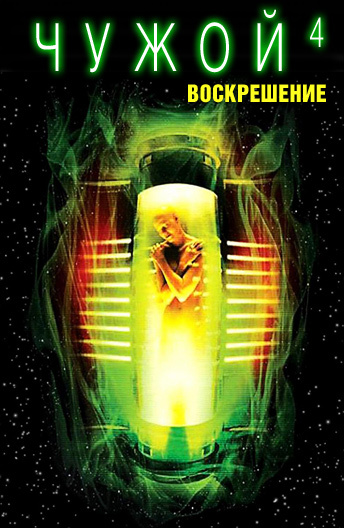

| 1.Основная серия | |
| 2.Приквелы | |
| 3.Отменённые фильмы | |
| 4.Другие фильмы | |
| 5.Хронологический порядок |
Чужой (1979)
Сюжет повествует об экипаже грузового космического корабля «Ностромо», вынужденного по контракту с Компанией исследовать неопознанный сигнал на необитаемой планете LV-426. В результате заражения на корабль проникает инопланетная форма жизни, убивающая членов экипажа. Личинка монстра попадает внутрь человека в результате заражения человека лицехватом — существом, яйца которого откладывают взрослые особи; через несколько часов после заражения личинка Чужого вырывается из груди человека, убивая его. Чужой очень быстро растёт и имеет вместо крови жидкость, схожую с мощной кислотой. Выясняется, что Чужой нужен Компании для проведения исследований и создания биологического оружия, а специально для проведения этой миссии в экипаж был внедрён андроид. Андроид выходит из строя и пытается убить Элен Рипли, после чего его уничтожают. Последняя оставшаяся в живых из всего экипажа, Рипли взрывает грузовой корабль, эвакуировавшись на шаттле, однако Чужой успевает пробраться и туда. Рипли удаётся выбросить его в открытый космос.
Чужие (1986)
Чужой — совершенный организм. Идеальная машина для убийства, чье физическое превосходство сочетается с его феноменальной жаждой уничтожения. Офицер Элен Рипли и команда космического корабля Ностромо один раз уже встретилась с такой тварью. В живых осталась только Элен. Капсула с Элен найдена спасателями после многих лет блуждания в космосе. Ей сообщают, что планета L.V. 426 колонизирована, и ей придется вернуться туда, где начался ее кошмар, ибо связь с колонистами прервалась. И вот в составе группы космического десанта Рипли отправляется на проклятую планету. Но теперь их там поджидает не один Чужой, а тысячи. Кто сможет выжить в этой войне: чудовища, способные только убивать, или люди, способные мыслить?
Чужой 3 (1992)
После бегства с планеты «Чужих» космический корабль Рипли терпит катастрофу вблизи так называемой планеты – тюрьмы, места, где отсиживают свой срок убийцы, насильники и прочие отбросы общества. Вместе с Рипли на эту планету попадает зародыш чужого, который и был причиной гибели корабля. Довольно быстро он превращается в гигантскую, зубастую тварь и начинает свое темное дело. Его жертвами становятся десятки безоружных заключенных. Кровь брызжет фонтаном, куски человеческого мяса разлетаются во все стороны. И кажется, что остановить эту машину смерти не сможет никто, никто кроме отважной, но увы не бессмертной девушки по имени Рипли.
Чужой 4: Воскрешение (1998)
Спустя 200 лет после событий третьей части войска Соединённых Систем, используя образцы крови Рипли, найденные на «Фьюри» 161, клонирует её вместе с зародышем Чужого. В итоге удаётся получить несколько особей Чужих. На корабль «Аурига», где происходят описанные события, прибывают контрабандисты с корабля «Бетти». Они привозят для генерала Переса груз — живых людей, которых будут использовать для разведения Чужих. Рождённые таким путём Чужие вырываются на свободу, постепенно убивая весь персонал и контрабандистов. «Аурига» движется к Земле, а оставшиеся в живых люди эвакуируются на «Бетти», устроив столкновение «Ауриги» с Землёй. Однако на «Бетти» пробирается новый Чужой, живорождённая особь, получившая ген живорождения от Рипли.
Прометей (2012)
«Промете́й» (англ. Prometheus) — американский научно-фантастический фильм режиссёра Ридли Скотта. Изначально задумывался как приквел фильма «Чужой» 1979 года, но позже трансформировался в самостоятельный фильм, ставший первым в трилогии приквелов.
В поисках сакрального знания группа ученых отправляется в самые темные и неизведанные чертоги вселенной. Именно там, в отдаленных мирах, находясь на пределе своих умственных и физических возможностей, им предстоит вступить в безжалостную схватку за будущее всего человечества.
В поисках сакрального знания группа ученых отправляется в самые темные и неизведанные чертоги вселенной. Именно там, в отдаленных мирах, находясь на пределе своих умственных и физических возможностей, им предстоит вступить в безжалостную схватку за будущее всего человечества.
Чужой: Завет (2017)
Сиквел фильма «Прометей»,изначально фильм назывался «Чужой: Потерянный рай» и задумывался как прямой сиквел «Прометея», но затем его концепция поменялась, хотя действие частично продолжает историю, показанную в «Прометее».
Во время обследования удаленной планеты, расположенной на другой стороне галактики, экипаж колониального корабля «Завет» обнаруживает, что то, что они изначально приняли за неизведанный рай, на самом деле - тёмный и опасный мир. Его единственный житель - синтетический андроид Дэвид, оставшийся в живых после обреченной экспедиционной миссии «Прометей».
Сиквел фильма «Чужой: Завет» (?)
Сиквел фильма «Чужой: Завет» находится в разработке. В конце мая 2019 года Ридли Скотт заявил о завершении работы над сценарием предстоящей картины.
«Безымянные» сиквелы (?)
В сентябре 2015 года Ридли Скотт сообщил, что он планирует два продолжения «Прометея», события которых приведут к событиям первого фильма «Чужой», добавив, что может быть, будет ещё четвёртый сиквел, прежде чем они вернутся к изначальной точке франшизы. В ноябре 2015 года Скотт подтвердил, что «Чужой: Завет» будет первым из трёх дополнительных фильмов в серии приквелов «Чужого», прежде чем связывать их с оригинальным «Чужим» и заявил, что продолжения «Прометея» откроют, кто создал ксеноморфа. Сценарий для третьего приквела фильма, названный «Чужой: Пробуждение», был написан во время производства «Завета» и был завершен к 2017 году, а производство планируется начать в 2018 году. В марте 2017 года Скотт сказал, что если фанаты действительно хотят продолжения франшизы, он продолжит её ещё на шесть фильмов и никогда её не закроет.
Другой сиквел «Чужого» (1979)
В мае 2017 года Ридли Скотт объявил, что планирует своё продолжение оригинального Чужого, проигнорировав события «Чужих» Джеймса Кэмерона. В более позднем интервью он сказал, что будет участвовать в качестве продюсера, но компания «20th Century Fox» решила отказаться от данной идеи.
Чужой: Привязанный
В середине 1990-х годов сценарист Стюарт Хазелдин написал сценарий под названием «Чужой: Привязанный». Руководители «Fox» были впечатлены сценарием, прочитав его после того, как четвёртая часть «Чужой: Воскрешение» вышел в постпродакшн. Неудачный кассовый прокат четвёртой части вынудил свернуть проект.
Чужой против Хищника 3
Во время производства «Чужих против Хищника: Реквием» братья Штраус выразили планы относительно третьей части. Однако, после негативных отзывов и кассового провала производство запланированного продолжения было приостановлено на неопределённый срок.
Чужой 5
Джосс Уидон написал сценарий для «Чужого 5», но Сигурни Уивер не заинтересовал данный сценарий, и она хотела, чтобы действие шло на LV-426. В то же время она выразила согласие вернуться к роли Рипли, если ей понравится сценарий.
«Чужой против Хищника» (англ. AVP: Alien vs. Predator; 2004)
«Чужие против Хищника: Реквием» (англ. Aliens vs. Predator: Requiem; 2007)
«Бэтмен: Тупик» (англ. Batman: Dead End; 2003)
Антология «Alien: 40th Anniversary Shorts»:
«Чужой: Заражение» (англ. Alien: Containment; 2019)
«Чужой: Образец» (англ. Alien: Specimen; 2019)
«Чужой: Ночная смена» (англ. Alien: Night Shift; 2019)
«Чужой: Руда» (англ. Alien: Ore; 2019)
«Чужой: Одна» (англ. Alien: Alone; 2019)
«Чужой: Жатва» (англ. Alien: Harvest; 2019)
Прометей (2089, декабрь 2093 — январь 2094)
Чужой: Завет (2104 год)
Чужой (2122 год)
Чужие (2179 год)
Чужой 3 (2179 год)
Чужой: Воскрешение (2380—2381 год)